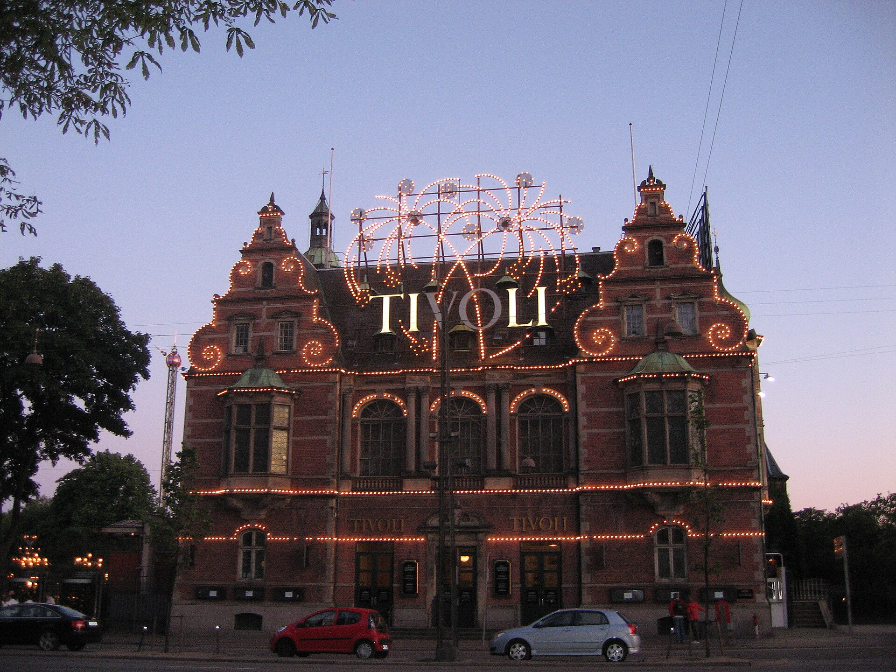
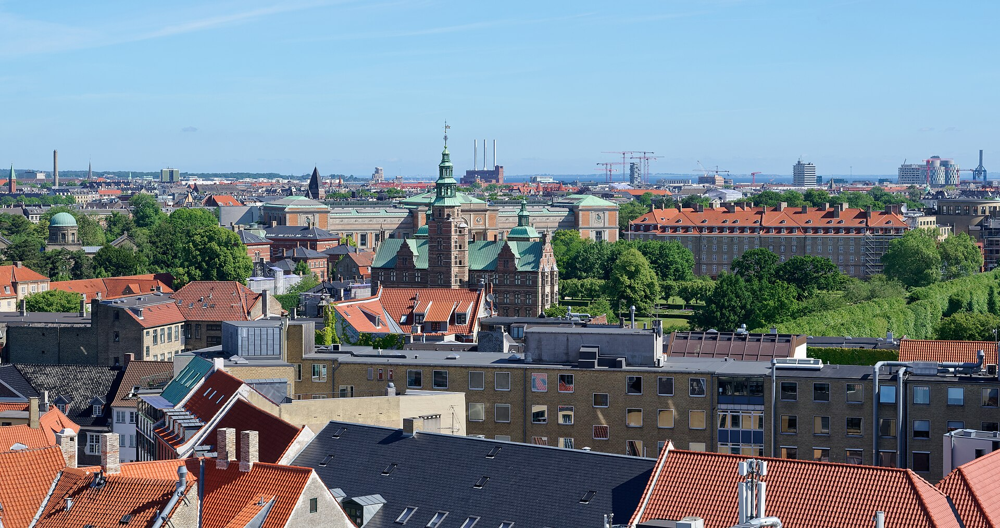

Fechas
30 ago – 2 sep 2026
4 días · 3 noches
Calculando cuánto falta…
Hoy es un día muy especial
Este año quería regalarte algo distinto, algo para vivir juntos y recordar siempre. Toca el regalo… te espera una sorpresa. 🎁
Toca el regalo para abrirlo
30 ago – 2 sep 2026
4 días · 3 noches
Calculando cuánto falta…
Día a día
Una propuesta para aprovechar Copenhague al máximo. ✏️ Ajusta las actividades a vuestro gusto.
Día 1 · Sábado 30 ago
Día 2 · Domingo 31 ago

Día 3 · Lunes 1 sep

Día 4 · Martes 2 sep
